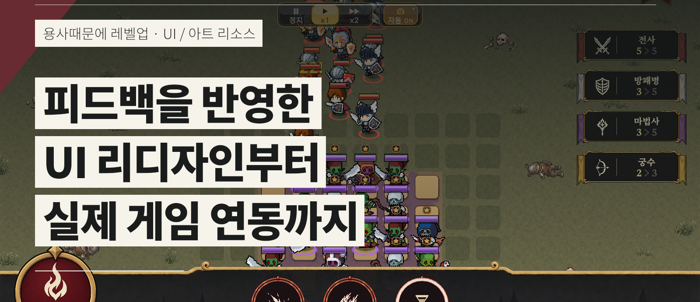
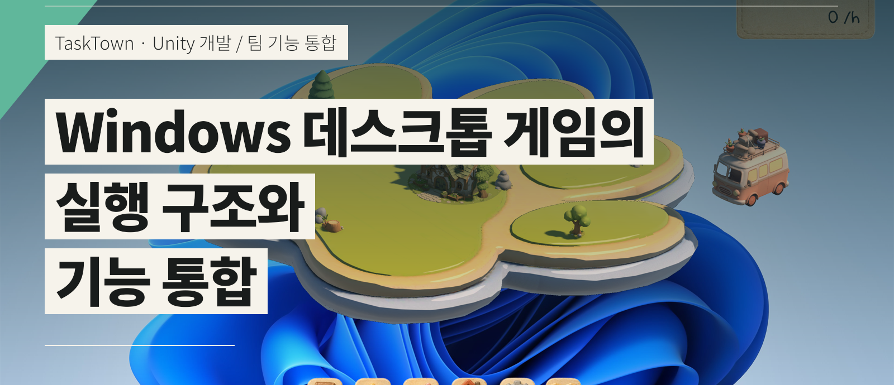

Figma로 UI 흐름을 설계하고 화면을 리디자인했습니다. 작업 기준을 정리하고 리소스·UI 반복 제작에 자동화 도구를 활용했습니다.

Figma로 UI 흐름을 설계하고 화면을 리디자인했습니다. 작업 기준을 정리하고 리소스·UI 반복 제작에 자동화 도구를 활용했습니다.

클릭·타이핑으로 마을을 키우는 게임의 실행 흐름과 팀 기능 통합을 맡았습니다. 동시 작업을 고려해 수정 범위와 리뷰 항목을 정했습니다.
팀 피드백을 정보 계층·입력·상태 표현으로 나누고, 바꿀 것과 유지할 것을 정합니다.
팀 기능의 연결 지점을 확인하고, 동시에 진행 중인 작업을 고려해 수정 범위를 정합니다.
작업 기준을 문서로 정리하고, 반복 제작과 표시 검사는 도구로 처리합니다. 적용할 결과는 직접 검토합니다.
최희수 · Portfolio